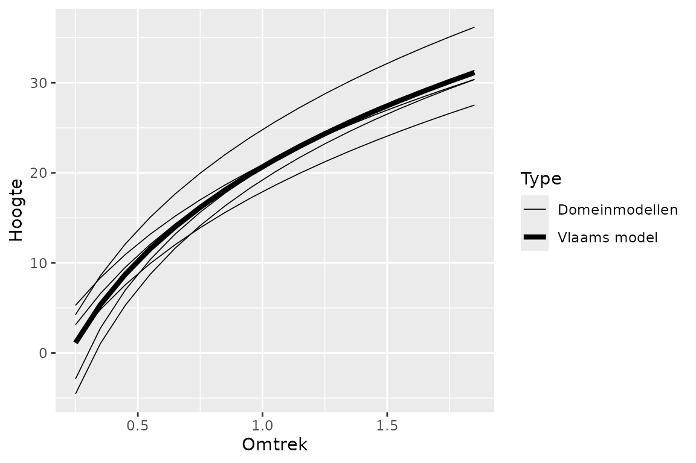

Handleiding package diameter-hoogtecurves
Els Lommelen en Thierry Onkelinx
2025-03-13
Source:vignettes/Handleiding.Rmd
Handleiding.RmdInleiding
Situering
Een aanbeveling uit het KOBE-project “Meting na hamering” uit 2012
was om het opmeten van boomhoogtes te vervangen door
diameter-hoogtecurves opgesteld aan de hand van bestaande meetgegevens.
Hiermee zou bij de volumeschatting van bomen een tijdswinst gerealiseerd
kunnen worden zonder substantieel in te boeten aan nauwkeurigheid. Om
deze aanbeveling in de praktijk te brengen, is in 2016-2017 het package
dhcurve ontwikkeld.
Doelstellingen
Het package dhcurve bundelt een aantal functies die
toelaten om “diameter-hoogtecurves” op te stellen op basis van bestaande
meetgegevens van bomen (omtrek en hoogte). Het eindresultaat is een
dataset waarin per boomsoort, domein en omtrekklasse een geschatte
hoogte wordt opgegeven, of een dataset met per
boomsoort-domeincombinatie de parameters A, B en C van de curve
.
Het model dat gebruikt wordt om een curve op te stellen en/of de hoogteschattingen te maken, is afhankelijk van het aantal beschikbare metingen (zie definities). Om een betrouwbaar eindresultaat te bekomen, zijn de keuze van de op te meten bomen en de validatie van de gegevens belangrijk (zie Praktische werkwijze). Achtergrondinformatie over de in het package uitgewerkte berekeningswijze is opgenomen onder Standaardstramien voor berekeningen.
Definities
Basismodel: Het meest uitgebreide en nauwkeurige model voor een boomsoort, bestaande uit een overkoepelend deel (= Vlaams model) en een domeinspecifiek deel dat corrigeert voor de standplaats. Dit model wordt berekend voor boomsoorten waarvoor meer dan 50 metingen beschikbaar zijn in minimum 6 domeinen (en enkel voor de domeinen waarvoor minimum 50 metingen beschikbaar zijn).
Vlaams model: Het overkoepelend deel van het basismodel, dus een “gemiddeld model” op Vlaamse schaal voor een specifieke boomsoort. Zonder correctie voor de standplaats (domein) geeft dit model een minder accurate schatting.
Afgeleid model: Domeinspecifiek model waarbij het Vlaams model gecorrigeerd wordt voor de standplaats door de curve in hoogte te verschuiven, terwijl de curvevorm van het Vlaams model behouden wordt. Dit model wordt berekend voor domeinen waar 10 tot 50 metingen beschikbaar zijn op voorwaarde dat er een basismodel berekend is voor de boomsoort.
Lokaal model: Domeinspecifiek model waarbij een eigen curve berekend wordt voor elke boomsoort-domeincombinatie waarvoor minimum 50 metingen beschikbaar zijn. Dit model is een alternatief van het basismodel voor boomsoorten waarvan er minder dan 6 domeinen zijn met 50 metingen. In tegenstelling tot het basismodel heeft het lokaal model geen soortspecifiek overkoepelend deel, waardoor er geen Vlaams model kan afgeleid worden. Dit betekent dat er voor boomsoorten waarvoor dit model opgesteld wordt, geen afgeleide modellen berekend kunnen worden voor domeinen met minder dan 50 metingen.
Domeinmodel: Algemene term voor een model dat specifiek op maat van een boomsoort-domeincombinatie berekend is. Het kan hier gaan over een basismodel inclusief domeinspecifiek deel, een afgeleid model of een lokaal model. Deze term moet vooral gezien worden als een tegenstelling van het Vlaams model, dat een gemiddelde is van alle domeinen voor een boomsoort.
Bruikbaar interval: Interval waarbinnen het model in kwestie gebruikt kan worden. Dit interval is afhankelijk van de beschikbare gegevens en van het vooraf vastgelegde relevante bereik (zie Standaardstramien voor berekeningen).
RMSE: De Root Mean Square Error is een waarde in meter die aangeeft hoe groot de spreiding van de metingen is t.o.v. het model en waar in feite ook uit afgeleid kan worden hoe goed het model de metingen benadert. Gelijkaardig aan de standaard error kan een betrouwbaarheidsinterval berekend worden voor de geschatte hoogten (op basis van het model) door 2 maal de waarde van de RMSE op te tellen en af te trekken van de geschatte hoogte.
Praktische werkwijze
Vuistregels voor de metingen
Aantal op te meten bomen
Het basismodel, dat het meest uitgebreide modeltype is, heeft enkele voordelen ten opzichte van de andere modeltypen:
- het basismodel wordt op het niveau van een boomsoort opgesteld,
waardoor de domeinmodellen deels mee profiteren van de metingen van de
boomsoort in andere domeinen (het globale soortmodel “corrigeert” de
domeinmodellen waar nodig, bv. bij omtrekklassen waar weinig metingen
beschikbaar zijn).
- het basismodel laat toe om afgeleide modellen te berekenen voor domeinen waarvoor minder metingen van de boomsoort beschikbaar zijn.
Vanwege deze voordelen wordt aangeraden om (voor relevante boomsoorten en domeinen) te streven naar voldoende metingen om dit modeltype te kunnen opstellen, zijnde:
- per domein en boomsoort minstens 50 bomen opmeten verdeeld over de aanwezige omtrekklassen tussen 0,5 en 2,3 m, maar ook kleinere omtrekken opmeten
- minstens 6 domeinen met voldoende metingen
Zolang deze streefcijfers niet gehaald worden, moeten we terugvallen op de andere modeltypen. Omdat deze gebaseerd zijn op minder metingen, hebben deze een breder betrouwbaarheidsinterval (af te leiden van een hoger cijfer voor de RMSE), wat betekent dat de schatting minder precies is.
Vuistregels voor selectie van de bomen
Voor een betrouwbaar resultaat is het belangrijk dat de groep gemeten bomen representatief is voor alle bomen van die boomsoort en omtrekklasse die in dat domein staan, wat inhoudt dat ze willekeurig gekozen moeten worden. De geselecteerde bomen moeten in de mate van het mogelijke evenredig gespreid zijn over:
- de beschikbare omtrekklassen
- dominante en onderstandige bomen
- de verschillende leeftijdsklassen
- de bestanden binnen het domein die voor minimum de helft bestaan uit de boomsoort in kwestie, met een voorkeur voor homogene bestanden
De laatste voorwaarde houdt dus enerzijds in dat de voorkeur wordt gegeven aan metingen in homogene bestanden, omdat het bij een houtverkoop belangrijk is dat het volume van de dominant voorkomende boomsoort juist geschat is. Voor de sporadisch voorkomende bomen van een andere soort in dit bestand is een precieze schatting minder belangrijk, dus hiervoor volstaan schattingen op basis van metingen in een homogeen bestand van deze soort.
Anderzijds houdt deze voorwaarde in dat de geselecteerde bomen van de boomsoort in kwestie evenredig gespreid moeten zijn over de relevante bestanden (dus de bestanden die homogeen zijn voor deze boomsoort of die minimum voor de helft bestaan uit deze boomsoort).
Proefvlak
De modellen worden berekend op basis van metingen op domeinniveau, dus puur technisch worden er geen vereisten opgelegd in verband met de verdeling van de bomen over de bestanden of het gebruik van proefvlakken of steekproefcirkels.
Om bovenstaande vuistregels te volgen en een subjectieve keuze van de te meten bomen te vermijden, kan het gebruik van een proefvlak echter een voordeel zijn. Nadeel is dat het meer tijd vraagt, en dat het moeilijker is om van alle omtrekklassen voldoende metingen te hebben. Er zou ook gedacht kunnen worden aan een alternatief voor een proefvlak, bijvoorbeeld een rechte lijn door het bos waarlangs alle bomen opgemeten worden.
Clusteren van boomsoorten en/of domeinen
Kunnen boomsoorten als ruwe en zachte berk of zomer- en
wintereik samengevoegd worden tot berk of inlandse eik?
Technisch is dit geen probleem: na het inladen van de gegevens uit de
databank en voor het uitvoeren van de analysestappen uit het
dhcurve-package kan extra code geschreven worden om deze
soorten dezelfde naam en ID-nummer te geven, waardoor ze bij de analyse
automatisch als dezelfde soort beschouwd worden. De beslissing welke
soorten mogen samengevoegd worden omdat ze dezelfde groeivorm hebben,
vereist echter een goede kennis van de boomsoorten. (Eventueel zou voor
deze beslissing bijkomend gekeken kunnen worden naar beschikbare
metingen en/of modellen van de samen te voegen soorten.) Daarnaast kan -
met kennis van zaken - het model van de ene boomsoort gebruikt worden
voor een andere soort waarvoor te weinig gegevens beschikbaar zijn.
Kortom, dit zijn eerder inhoudelijke keuzes die geen impact hebben op de
werking van dhcurve.
Wat als een domein te weinig metingen heeft en een naburig gelijkaardig domein wel een goed model heeft? Kan dat model dan gebruikt worden om voorspellingen te doen voor het andere domein? Initieel was de opzet van het project om “gelijkaardige” domeinen te clusteren op een zodanige manier dat per cluster eenzelfde model kon gebruikt worden. Maar bij de verkennende studie (uitwerken standaardstramien) bleek dat er geen clustering van domeinen mogelijk was op basis van ecoregio, bodemtype, provincie (~ beheermethode), noch vonden we ruimtelijke patronen op basis van de ligging binnen Vlaanderen die tot enige clustering zou kunnen leiden (zie Standaardstramien voor berekeningen / Keuze van modellen / Afgeleid model). Dus op een systematische wijze domeinen samenvoegen op basis van bovenstaande variabelen om eenzelfde model te kunnen gebruiken, lukt niet. Maar met voldoende voorkennis over bepaalde dichtbij elkaar gelegen bosdomeinen en eventueel een vergelijking van beschikbare metingen / modellen (bv. van andere soorten van dezelfde domeinen) kan het misschien voor bepaalde domeinen te verantwoorden zijn om dezelfde modellen te gebruiken? Zo zijn de curves van Heverleebos en Meerdaalwoud zeer gelijkaardig, maar in Bertembos blijkt de hoogte bij dezelfde omtrekklasse lager te zijn.
Technisch kan - net zoals bij de boomsoorten - ook voor domeinen
gespeeld worden met het samenvoegen of opsplitsen van domeinen: zodra
gegevens eenzelfde domeinID hebben, worden ze bij de
berekeningen als behorend tot eenzelfde domein beschouwd. Dit biedt dus
ook de mogelijkheid om afwijkende bestanden in eenzelfde domein te
beschouwen als afzonderlijke domeinen.
Berekenen van curves
De zogenaamde diameter-hoogtecurves, die in feite omtrek-hoogtecurves zijn, kunnen berekend worden door het hieronder weergegeven voorbeeldscript te runnen voor een opgegeven dataset Data (zie initiatie). Hierbij is het de bedoeling dat bij elke validatiestap een validatie gebeurt, waarna het script met de gevalideerde data opnieuw gerund wordt (zie validatie).
library(dhcurve)
#Eerst de gegevens uit de databank opladen (hier niet opgenomen)
Datalijst <- initiatie(Data)
Data.basis <- Datalijst[["Basis"]]
Data.afgeleid <- Datalijst[["Afgeleid"]]
Data.lokaal <- Datalijst[["Lokaal"]]
Data.rest <- Datalijst[["Rest"]]
Basismodel <- fit.basis(Data.basis)
AfwijkendeMetingen <- validatie.basis(Basismodel)
#metingen nakijken en vlaggen in de databank vooraleer verder te gaan!
Afgeleidmodel <- fit.afgeleid(Data.afgeleid, Basismodel)
AfwijkendeMetingen2 <- validatie.afgeleid(Basismodel, Afgeleidmodel)
#metingen nakijken en vlaggen in de databank vooraleer verder te gaan!
Lokaalmodel <- fit.lokaal(Data.lokaal)
AfwijkendeMetingen3 <- validatie.lokaal(Lokaalmodel, Data.lokaal)
#metingen nakijken en vlaggen in de databank vooraleer verder te gaan!
#om te gebruiken in IVANHO
OutputIvanho <-
outputIVANHO(Basismodel, Afgeleidmodel, Lokaalmodel, Data.lokaal)
write.csv2(OutputIvanho, "IVANHO.csv")
#voor een lijst met de modelparameters en foutenmarge (RMSE):
Resultaat <-
resultaat(Basismodel, Afgeleidmodel, Lokaalmodel, Data.lokaal)
write.csv2(Resultaat, "DHcurves.csv")
#Eventueel, bij voldoende metingen van hogere omtrekklassen
UitbreidingBasis <- validatie.uitbreiding(Basismodel, Data.basis)
UitbreidingLokaal <- validatie.uitbreiding(Lokaalmodel, Data.lokaal)
Uitbreiding <- rbind(UitbreidingBasis, UitbreidingLokaal)
OutputIvanho <-
outputIVANHO(Basismodel, Afgeleidmodel, Lokaalmodel, Data.lokaal,
Uitbreiding = Uitbreiding)
write.csv2(OutputIvanho, "IVANHO_uitbreiding.csv")De stappen “fit” en “validatie” worden achtereenvolgens doorlopen
voor de verschillende modeltypen (basismodel, afgeleid model en lokaal
model). Deze stappen (inclusief de initiatiestap en de finale stappen)
worden hieronder kort toegelicht vanuit praktisch oogpunt, met focus op
de workflow en aandachtspunten. Voor meer informatie over het gebruik
van de functies (om ze bv. buiten deze standaard workflow te gebruiken)
verwijzen we naar de helpfunctie van de functie in kwestie (in R aan te
roepen door ?<functienaam>), voor
achtergrondinformatie over de achterliggende berekeningen verwijzen we
naar het laatste deel van dit document: Standaardstramien voor
berekeningen.
Initiatie
De curves worden berekend op basis van een dataframe
Data met metingen van bomen, die de volgende informatie
moet bevatten:
-
DOMEIN_ID: het identificatienummer van het domein -
BOS_BHI: de naam van het domein -
IDbms: het identificatienummer van de boomsoort -
BMS: de naam van de boomsoort -
C13: de omtrek van de boom in cm (gemeten op 130 cm hoogte) -
HOOGTE: de hoogte van de boom in meter -
Status: in hoeverre er foutcontrole op de meting gedaan is, mogelijke categorieën: “Niet gecontroleerd”, “Te controleren”, “Goedgekeurd”, “Afgekeurd”, “Negeren”, “Aangepast”,…
Bedoeling is dat gegevens met status anders dan “Niet gecontroleerd”, “Te controleren” of “Goedgekeurd” voor het uitvoeren van deze initiatiestap uit de dataset verwijderd worden.
Bij de initiatiestap wordt op basis van de omtrek C13
(in te voeren in cm!) een omtrekklasse berekend met eenheid in meter en
alle verdere rekenstappen gebeuren in meter.
De hier berekende omtrekklassen komen overeen met deze in
IVANHO1 (gemeten op 1,3 m hoogte): ze gaan omhoog
met stappen van 0,1 m (10 cm), bv. de klasse van 0,35 m bevat de bomen
met omtrek tussen 0,3 en 0,4 m. Het klassenmidden van de omtrekklasse
(in het voorbeeld 0,35 m) wordt opgeslagen in de variabele
Omtrek, in een finale fase wordt uit deze variabele het
interval van de klassengrenzen afgeleid.
De verdere analysen gebeuren voornamelijk op basis van bomen met
omtrek tussen 0,5 en 2,3 m, wat betekent dat de gegevens van zeer dunne
en zeer dikke bomen niet gebruikt worden (zie Standaardstramien voor
berekeningen voor meer achtergrondinformatie over deze keuze).
Daarom worden bomen met omtrek kleiner dan 0,2 m en groter dan 3 m al
tijdens deze initiatiestap uit de dataset verwijderd. Bomen met omtrek
groter dan 2,4 m worden gevlagd (VoorModelFit =
FALSE) en genegeerd bij de bouw van het model. Om enige
controle te hebben over wat verwijderd wordt en eventuele fouten te
kunnen rechtzetten, genereert de functie initiatie() een
overzichtsrapport met instructies hoe de grootste problemen gemakkelijk
opgespoord kunnen worden. (Een potentiële fout hier is het gebruik van
een verkeerde eenheid voor de metingen, en het ten onrechte verwijderen
van een boom kan gevolgen hebben voor het al dan niet kunnen fitten van
een bepaald modeltype.)
Behalve Omtrek berekent de functie
initiatie() nog enkele andere variabelen die nodig zijn
voor de analysestappen. Daarna wordt de dataset opgesplitst in 4 delen
in functie van de modeltypen waarvoor de gegevens gebruikt kunnen worden
(waarbij de gegevens van elke boomsoort-domeincombinatie worden
toegevoegd aan het meest ambitieuze modeltype dat haalbaar is):
- Basismodel (boomsoorten met > 50 metingen per domein in de omtrekklassen tussen 0,5 en 2,3 m en >= 6 domeinen)
- Afgeleid model (domeinen met < 50 metingen in de omtrekklassen tussen 0,5 en 2,3 m en > 10 metingen in de omtrekklassen tussen 0,5 en 2,8 m, voor boomsoorten waarvoor basismodel opgesteld is)
- Lokaal model (boomsoorten met > 50 metingen per domein in de omtrekklassen tussen 0,5 en 2,3 m en < 6 domeinen)
- Rest (alle overblijvende gegevens, dus gegevens die niet gebruikt kunnen worden om een model te fitten)
De functie geeft een list terug met deze 4 datasets als items met namen “Basis”, “Afgeleid”, “Lokaal” en “Rest”. De 3 eerstgenoemde datasets kunnen gebruikt worden om de verschillende modeltypen te berekenen. Als er metingen van te dunne en te dikke bomen verwijderd zijn, worden deze toegevoegd als vijfde dataset.
Fit
Voor elk van de drie hierboven geselecteerde datasets wordt een gepast model berekend of “gefit” op basis van een voor dat modeltype specifieke functie. De output is voor elk modeltype verschillend; de functies waarbij deze modeltypen als parameter meegegeven moeten worden, zijn aangepast om met deze verschillen om te gaan (of zijn ook modelspecifiek).
Een aandachtspunt is dat het berekende basismodel (in feite het hieruit af te leiden Vlaams model) nodig is om het afgeleid model te kunnen berekenen; het lokaal model is onafhankelijk van deze en kan dus afzonderlijk berekend worden.
Als een lege dataset als parameter meegegeven wordt, zal de functie
fit.xxx() een foutmelding geven. Als de reden voor deze
lege dataset onduidelijk is, is het aan te raden om het
overzichtsrapport gegenereerd door de functie initiatie()
te bekijken. Om de berekeningen enkel te doen voor de andere modeltypen
(waarvan de dataset niet leeg is), moet het hierboven weergegeven script
aangepast worden door alles wat met deze functie te maken heeft, te
verwijderen: het blokje script met fit.xxx() en
validatie.xxx(), en onderaan de desbetreffende parameter(s)
in de functies outputIVANHO() en/of
resultaat().
Validatie
Idee van de validatiestap is om aan foutcontrole te doen, waar nodig de gegevens in de databank aan te passen, de analyse te herhalen met de aangepaste gegevens en deze cyclus voor de basismodellen te herhalen “tot alles in orde is”. Daarna kan verder gegaan worden met de analyse van de afgeleide modellen, waar bij de validatie weer dezelfde cyclische procedure doorlopen wordt. Vermits nu de basismodellen in orde zijn, mag hier de (tijdrovende) validatiestap overgeslagen worden. Deze functie moet dus niet meer opnieuw gerund worden zolang er geen aanpassingen zijn in de hiervoor gebruikte gegevens in de dataset. Na de validatie van de afgeleide modellen, is het de beurt aan de lokale modellen.
De validatie gebeurt op basis van een validatierapport dat de functie
validatie.xxx() genereert, waarin de modellen (curves) en
de meetresultaten (stippen) grafisch weergegeven zijn, met potentiële
afwijkingen in rood. Enkel grafieken met potentiële afwijkingen worden
in het rapport opgenomen, wat betekent dat het aantal te controleren
grafieken vermindert naargelang er meer problemen opgelost worden.
Idealiter stopt de validatiestap dus met een leeg validatierapport, in
elk geval stopt de validatiestap pas zodra de validator geoordeeld heeft
dat geen van de potentiële afwijkingen (in rood) in het validatierapport
effectief een probleem vormen.
Belangrijk is dat de validatie in 2 stappen gebeurt, waarbij de tweede stap pas uitgevoerd mag worden van zodra de eerste stap volledig in orde is. Als in de tweede stap aanpassingen gebeuren, moet bij de volgende cyclus ook de eerste stap opnieuw bekeken worden. (Door aanpassingen in de databank verandert telkens het model en ook de afwijkende metingen, die op basis van het model berekend worden.)
Stap 1: afwijkende metingen
Bedoeling hier is dat de meest afwijkende meetresultaten gecontroleerd worden op juistheid en uiteindelijk in de databank de status “Goedgekeurd”, “Afgekeurd”, “Negeren”, “Aangepast”,… krijgen. Deze te controleren afwijkingen worden weergegeven als rode stippen in de grafieken in het validatierapport. (Het gaat hier over de meetresultaten die het meest afwijken van de modelcurve met uitzondering van de meetresultaten die al de status “Goedgekeurd” hebben.)
De functie validatie.xxx() geeft de afwijkende metingen
ook als dataframe terug, wat toelaat om de status van de betreffende
meetresultaten (die in principe op “Niet gecontroleerd” staan) in de
databank scriptmatig aan te passen naar “Te controleren”. Een voorbeeld
(enkel uitgewerkt voor Bosdat-gegevens):
AfwijkendeMetingen <- validatie.basis(Basismodel)
# De query waarmee je de aanpassing in de databank kan maken
updatequeryBosdat <-
"UPDATE tblBosdatMetingen
SET Status = 'Te controleren'
WHERE Status = 'Niet gecontroleerd' AND rownames IN ('%s')"
# Lijst maken met alle id's (die in dit geval overeenkomen met 'rownames' in de
# databank) van de records die aangepast moeten worden
IDafwijkendeMetingen <-
paste(unique(AfwijkendeMetingen$ID, na.rm = TRUE), collapse = "','")
# Deze lijst in de query plakken (sprintf vervangt %s in de string
# 'updatequeryBosdat' door de inhoud van IDafwijkendemetingen)
query <- sprintf(updatequeryBosdat, IDafwijkendeMetingen)
#connecteren met de databank en de query uitvoeren
connectieGegs <- odbcConnectAccess2007(
paste0(dbpath, "DiamHoogteMetingen.accdb")
)
Test <-
sqlQuery(connectieGegs, query)
odbcClose(connectieGegs)Na het “verwijderen” (= als afgekeurd of negeren labelen) of aanpassen van gegevens is het belangrijk om de gegevens opnieuw in te laden en het model opnieuw te berekenen. Dit zal immers wijzigen, waardoor er mogelijk andere metingen als afwijkend aangeduid zullen worden.
Meermaals alle afwijkende metingen verwijderen zal tot gevolg hebben dat de foutenmarge smaller wordt (waardoor er telkens nieuwe afwijkende metingen aangeduid worden) en dat uiteindelijk enkel bomen met “ideale verhoudingen” overblijven. Op dat moment zal het model geen reflectie meer zijn van een realistische situatie, omdat de natuurlijke variatie ontbreekt. In het slechtste geval worden afwijkende metingen verwijderd tot er niet meer genoeg gegevens overblijven om het gekozen modeltype te fitten. Het is dus geen goed idee om systematisch alle afwijkende metingen te verwijderen.
Het goedkeuren van afwijkende metingen zal sneller tot een stabiel model leiden (niets verwijderen verandert het model niet), al is het uiteraard wel de bedoeling dat foute of onbetrouwbare metingen verwijderd worden. Deze beïnvloeden immers het model in negatieve zin, zeker als ze sterk afwijken van de andere meetresultaten en/of in de hoogste of laagste omtrekklassen voorkomen.
Je mag pas verdergaan naar stap 2 als alle rode stippen uit het validatierapport verdwenen zijn.
Stap 2: afwijkende curves
Deze stap moet enkel gebeuren bij het basismodel en het lokaal model, niet bij het afgeleid model. (Dit omdat de curvevorm van het afgeleid overgenomen wordt van het basismodel en bijgevolg daar al gecontroleerd is.)
Bedoeling van deze tweede stap is om aan de hand van de curvevorm na te gaan of het model geen te sterke afwijkingen vertoont en dus bruikbaar is als model. Mogelijk afwijkende delen in de curves zijn in rood getekend.
Welke problemen kunnen optreden en hoe beoordelen?
- “curvevorm hol bij lage omtrekklassen”: dit is waarschijnlijk geen probleem als het rood gekleurde deel maar 1-2 omtrekklassen omvat of als de curve min of meer recht is. Wel problematisch zijn een U-vormige curve, een curve in de vorm van hockeystick of een S-vormige curve.
- “curve daalt terug bij hoge omtrekklassen”: dit is geen probleem als
het rood gekleurde deel minder dan 5 omtrekklassen omvat, en het is wel
een probleem als het gaat over een aanzienlijk deel van de curve. Houd
bij de beoordeling in het achterhoofd dat voor de hoogteschattingen voor
IVANHOde maximale hoogte van de curve zal gebruikt worden voor de (rood gekleurde) hogere omtrekklassen. De “curve” zal hier met andere woorden niet dalen maar horizontaal lopen.
Wat met de probleemcurves? Deze curves zijn niet goed genoeg
om te gebruiken als model in IVANHO (of elders), en er
moeten bijkomende metingen uitgevoerd worden vooraleer dit model
eventueel kan verbeteren. Dus tot deze extra metingen gebeurd zijn,
willen we dit model eigenlijk niet gebruiken. Als het gaat over een
berekend basismodel, kunnen de gegevens eventueel wel gebruikt worden om
een afgeleid model te berekenen voor dit domein.
Praktisch pakken we dit aan door voor die specifieke
boomsoort-domeincombinatie het minimum aantal bomen om een basismodel
(of lokaal model) te berekenen, op te trekken. We raden aan om als
nieuwe grenswaarde 10 bomen meer te nemen dan het huidige aantal bomen
(met omtrek groter dan 0,5 m). Redenering: 1 extra gemeten boom zal de
curve niet substantieel verbeteren, 10 misschien wel? In de functie
initiatie() is de mogelijkheid voorzien om als parameter
een dataframe mee te geven met de uitzonderingen voor deze minimumwaarde
van 50 bomen. Deze laat ook toe om de minimumwaarde voor het afgeleid
model (standaard 10 bomen) op te trekken ingeval er problemen zijn met
deze curve (bv. meetresultaten te verspreid).
Onderstaand voorbeeld toont hoe de limiet van het aantal bomen voor Zomereik in de Gavers opgetrokken wordt naar 65 bomen (momenteel zijn hier 55 bomen met omtrek groter dan 0,5 m opgemeten en stel dat we de curve niet betrouwbaar genoeg vinden omdat er te weinig bomen opgemeten zijn in de hogere omtrekklassen). De limiet voor het afgeleide model houden we bij 10 bomen (min_afgeleid = NA, dus we kennen hier geen waarde toe).
# dataframe aanmaken met nieuwe limiet(en)
Uitzonderingen <- data.frame(DOMEIN_ID = "DomWVL09033",
BMS = "Zomereik",
min_basis = 65, min_afgeleid = NA,
stringsAsFactors = FALSE)
Datalijst_nieuw <- initiatie(Data, Uitzonderingen)
#en met deze datasets de modellen opnieuw berekenenQua workflow zou het zinvol kunnen zijn om deze uitzonderingen op te slaan in een spreadsheet of databank, eerder dan dit hard te coderen in een script.
Als geen van de afwijkende (rode) curves in het validatierapport een
probleem zijn, mag je verdergaan (ondanks het feit dat het
validatierapport nog niet leeg is). Eventueel kan gekozen worden om deze
afwijkende curves tijdelijk niet meer in het rapport te tonen door
gebruik te maken van de parameter
GoedgekeurdeAfwijkendeCurves (functies
validatie.basis() en validatie.lokaal()). Het
gebruik van deze parameter is gelijkaardig aan
uitzonderingen in de zin dat opgegeven moet worden vanaf
hoeveel metingen een curve terug getoond moet worden (als deze nog
steeds afwijkend is).
OPMERKING Er kunnen ook andere problemen optreden waarop niet expliciet wordt gevalideerd, bijvoorbeeld een slechte verdeling van de bomen over de verschillende omtrekklassen. Bij het basismodel gaat hier de curve sterk aanleunen tegen het Vlaams model, bij het lokaal model gaat hier de curve recht door de weinige aanwezige metingen (die niet per definitie “gemiddeld” zijn). Ook hier kan beslist worden om het model voorlopig niet te gebruiken (in afwachting van meer metingen) door bovenstaande methode.
outputIVANHO
De functie outputIVANHO() genereert op basis van de
berekende (gefitte) modellen een tabel met per
boomsoort-domeincombinatie en per omtrekklasse een geschatte hoogte, om
te gebruiken in IVANHO. Deze schatting wordt ingeval van
een minimum of maximum binnen het interval verbeterd ten opzichte van
het berekende model door de maximale hoogte ook te gebruiken voor
omtrekklassen hoger dan het maximum, en de minimale hoogte ook te
gebruiken voor omtrekklassen lager dan het maximum. De “curve” zal met
andere woorden niet terug dalen of stijgen, maar horizontaal lopen. Een
omtrekklasse wordt weggelaten als de geschatte hoogte lager is dan 2,5
m.
resultaat
De functie resultaat() genereert op basis van de
berekende (gefitte) modellen een tabel met volgende info:
DomeinID-
BMS(boomsoort) -
Modeltype: basismodel / afgeleid model / lokaal model / geen model - parameters
A,BenCper model en per boomsoort - bruikbaar interval (
Q5kenQ95k) RMSE-
nBomen: aantal metingen met omtrek < 3 m -
nBomenOmtrek05: aantal metingen tussen 0.5 en 2,8 m (dus het aantal metingen waarop het afgeleid model gebaseerd is) -
nBomenInterval: aantal metingen waarop het model gebaseerd is (ingeval van basismodel of lokaal model) -
nBomenIntervalOmtrek05: aantal metingen > 0.5 m binnen het interval (dus het aantal metingen waarop de RMSE-berekening van het basismodel en lokaal model gebaseerd is)
uitbreiding naar hogere omtrekklassen
Als een basismodel of lokaal model meer dan 10 metingen heeft voor
omtrekklassen boven het bruikbaar interval, dan kunnen curves desgewenst
uitgebreid worden naar die hogere omtrekklassen. Dit gebeurt door het
model dat gebouwd is op basis van de omtrekklassen binnen het bruikbaar
interval, toe te passen op de hogere omtrekklassen (tot 3,0 m en maximum
10 omtrekklassen), en de curves te valideren met de functie
validatie.uitbreiding().
Deze functie geeft, gelijkaardig aan de andere validatiefuncties, in
een validatierapport de 20 slechtste curves weer (van slechtste naar
minst slechte). Bedoeling hier is om te controleren of het blauw
gekleurde deel van de curve een goede benadering is voor de in blauw
weergegeven punten, dus of dit deel van de curve midden door de
puntenwolk gaat. Gelijkaardig aan de andere validatiefuncties, kan een
slechte curve genegeerd worden door het minimum aantal metingen voor een
uitbreiding op te trekken door bij argument Uitzonderingen
in functie initiatie() een waarde mee te geven in kolom
min_uitbreiden_model (en daarna de functies opnieuw te
runnen). Ook kan gekozen worden om goedgekeurde uitbreidingen tijdelijk
niet te tonen in het validatierapport met een argument
GoedgekeurdeUitbreidingen in functie
validatie.uitbreiding(), dat gelijkaardig werkt aan
GoedgekeurdeAfwijkendeCurves in andere
validatie-functies.
Deze functie geeft een tabel met waarden terug die als argument
Uitbreiding meegegeven kan worden in
outputIVANHO() om de uitbreidingen toe te voegen aan de
output van deze laatste functie.
Standaardstramien voor berekeningen
Terwijl het vorige hoofdstuk eerder praktijkgericht was, behandelt dit hoofdstuk de achterliggende berekeningen van de verschillende functies, alsook de redenen waarom voor een bepaalde aanpak of berekeningswijze gekozen is.
Kort gezegd laat dit package toe om de hoogtes van bomen te schatten door middel van een model, dat we opstellen op basis van eerder uitgevoerde metingen per boomsoort-domeincombinatie. Een model is altijd een benadering van werkelijkheid, dat er liefst zo goed mogelijk bij aansluit (cfr. George Box: “All models are wrong, but some are useful”). Belangrijk is dat het model vooral een goede voorspelling geeft binnen de relevante scope. Hoe breder deze scope gedefinieerd wordt, hoe moeilijker het is om een model te vinden dat de werkelijkheid overal goed gaat benaderen en hoe groter de kans dat het model ergens meer afwijkt dan wenselijk. Hoe smaller de scope, hoe nauwkeuriger de voorspelling van het model, maar het model is dan ook enkel bruikbaar binnen deze scope. Om een optimaal model te vinden, komt het er dus op aan om deze scope zo goed mogelijk af te bakenen: niet te smal, maar ook niet te breed. Daarnaast moeten ook voor het model zelf afwegingen en keuzes gemaakt worden, o.a. met betrekking tot complexiteit en betrouwbaarheid. De keuzes die voor de modellen in dit package gemaakt zijn en de achterliggende redenen worden in dit hoofdstuk behandeld.
Bruikbaar interval
Omtrekklassen
De opdrachtgever verwacht als resultaat een hoogteschatting voor elke omtrekklasse (per stap van 0,1 m, bv. de klasse van 0,35 m bevat de omtrekken tussen 0,30 en 0,40 m). Bovendien is voor een deel van de aangeleverde gegevens de omtrek niet exact gemeten, maar weergegeven als omtrekklassen. Om deze redenen is gekozen om het model niet op te stellen op basis van een continue variabele omtrek, maar op basis van een discrete variabele “omtrekklasse”. Een continue variabele zou eerder een vals gevoel van nauwkeurigheid geven, want de gemeten omtrekken zijn afgerond tot op een bepaalde meeteenheid, dus het zijn sowieso discrete variabelen.
Als de omtrekklassen als categorische variabelen gedefinieerd zouden worden, zou het model louter bestaan uit een geschatte hoogte per omtrekklasse, waarbij het verband tussen omtrek(klasse) en hoogte niet in rekening gebracht kan worden. Het gevolg is dat “afwijkende” hoogteschattingen binnen een model niet gecorrigeerd zouden worden op basis van hoogteschattingen van andere omtrekklassen. Als de omtrekklassen als discrete variabelen gedefinieerd worden, waar we hier voor gekozen hebben, kan het model wel opgesteld worden als een verband tussen omtrek(klasse) en hoogte.
Het feit dat de omtrekklassen gedefinieerd zijn als een discrete variabele, heeft als belangrijk gevolg dat het model resulteert in een schatting per omtrekklasse en dus niet in een continu verband tussen omtrek en hoogte. Dit is zeer belangrijk om rekening mee te houden bij de interpretatie van de gegevens.
Scope voor omtrekklassen
De opdrachtgever gaf ons het relevante bereik wat betreft de diameter: tussen 15 en 75 cm DBH, wat overeenkomt met de omtrekklassen tussen 0,5 en 2,3 m. Focus ligt dus op een goede voorspelling binnen dit interval (scope), en de berekening van de foutenmarge (RMSE) gebeurt in elk van de modellen voor dit interval. (Noot: in de praktijk zijn zelden bomen met omtrek groter dan 1,5 tot 2 m opgemeten, waardoor het maximum van het model vaak lager ligt dat 2,3 m.) Waar metingen het toelaten, zou de opdrachtgever het model wel graag kunnen uitbreiden naar omtrekklassen tot 3 m.
Vermits metingen buiten het relevante interval ook een invloed hebben op de vorm van de curve binnen dat interval (ze “trekken” aan de hele curve), is het belangrijk om goed de invloed na te gaan van het al dan niet meenemen van deze metingen. Omdat we voor het basismodel en lokaal model gemerkt hebben dat het meenemen van de metingen van de lagere omtrekklassen vaak een betere curvevorm geeft bij de gekozen wiskundige functie, hebben we ervoor gekozen om deze lagere omtrekklassen mee te nemen voor het berekenen van het model. Bij hogere omtrekklassen, die eigenlijk niet zo vaak voorkwamen, zagen we dit voordeel niet. Daarom hebben we bomen met omtrek > 2,4 m weggelaten voor het basismodel en het lokaal model. Er is hier wel een mogelijkheid voorzien om achteraf het model uit te breiden naar omtrekklassen tot 3 m (door toepassing van het model)
Voor het berekenen van het afgeleid model (= verschuiving van het Vlaams model) worden de lagere omtrekklassen (< 0,5 m) niet meegenomen. Bij de berekening van de foutenmarge (RMSE) worden deze omtrekklassen ook niet meegenomen. Hier bekom je immers het meest optimale model voor je scope als je de Vlaamse curve verschuift zodat deze zo dicht mogelijk aansluit bij de metingen van het gekozen interval (in dit geval alle omtrekklassen tussen 0,5 en 2,8 m). Bij het meenemen van lagere omtrekklassen bepalen deze metingen mee de ligging van de curve, met een (mogelijk) minder goede benadering in het gekozen interval tot gevolg.
Bruikbaar interval: Q5k en Q95k
De “randpunten” van het gebruikte interval (dus de metingen aan het
minimum en maximum van het gekozen interval) hebben door de zogenaamde
hefboomwerking vaak een zeer grote invloed op het model (de vorm van de
curve). Als deze metingen betrouwbaar zijn en in lijn liggen met de
andere metingen, “trekken” ze vaak de curve in de juiste vorm. Anders is
als deze metingen potentieel afwijkend zijn, want dan kunnen ze de hele
curve in een verkeerde richting trekken, wat uiteraard ongewenst is. Dit
probleem kan zich potentieel voordoen als er aan de rand van het
interval maar enkele metingen gebeurd zijn, omdat deze toevallig kunnen
afwijken van andere metingen. We verwachten dat dit probleem zich niet
zal voordoen als de uiterste omtrekklassen veel metingen bevatten, want
de kans is zeer klein dat deze allemaal afwijkend zijn (dus we gaan
ervan uit dat het gemiddelde van deze grotere groep metingen geen
afwijkend cijfer oplevert). We kunnen dit probleem dus vermijden door te
zorgen dat de uiterste omtrekklassen nooit bestaan uit weinig metingen,
wat eenvoudigweg kan door de grenzen van het gebruikte interval te
bepalen op basis van kwantielen: we gebruiken de gegevens tussen het
kwantiel van 2,5% min 1 omtrekklasse (Q5k) en kwantiel van
97,5% plus 1 omtrekklasse (Q95k), waarbij telkens de
volledige omtrekklasse genomen wordt waarin de betreffende waarde valt.
We noemen dit interval het bruikbaar interval, en we gebruiken enkel de
gegevens binnen dit interval voor het berekenen van de modellen.
Dit is tevens het interval waarin het model voldoende betrouwbare schattingen levert.
Bij een basismodel en lokaal model wordt de curvevorm bepaald door het gefitte model, dus voor deze twee modellen is het relevant om `mogelijk onbetrouwbare´ randpunten weg te laten en dus enkel de punten binnen het bruikbaar interval te gebruiken om het model te fitten. Bij het afgeleide model, dat een verschuiving is van het Vlaamse model, vormen deze randpunten geen probleem, dus hier worden alle metingen meegenomen.
Functie initiatie()
De functie initiatie() berekent per
boomsoort-domeincombinatie enkele variabelen die verband houden met dit
bruikbaar interval:
- bruikbaar interval (
Q5kenQ95k) - aantal bomen (
nBomen), waarbij de bomen met omtrek > 3,0 m buiten beschouwing gelaten worden - aantal bomen met omtrek tussen 0,5 en 2,8 m
(
nBomenOmtrek05) - aantal bomen binnen bruikbaar interval
(
nBomenInterval) - aantal bomen binnen bruikbaar interval met omtrek > 0,5 m
(
nBomenIntervalOmtrek05)
Op basis van het aantal bomen (binnen het bruikbaar interval) met
omtrek > 0,5 m splitst de functie initiatie() de dataset
op in functie van de verschillende modeltypen (zie initiatie onder praktische werkwijze en zie uitleg
hierboven over bruikbaar interval).
Keuze van modellen
Algemeen
Voor de keuze van de wiskundige vergelijking die binnen het bruikbaar interval een goede schatting geeft, hebben we 17 modellen uit de literatuur uitgetest. Voor de selecties hebben we ons voornamelijk gebaseerd op de RMSE, die aangeeft hoe goed het model de metingen benadert. Bijkomend hebben we de curvevorm visueel beoordeeld, wat in feite een gelijkaardig resultaat gaf. We zijn in 4 fasen te werk gegaan:
alle modellen getest voor de metingen van beuk uit Zoniënwoud en de slechtste modellen geschrapt
de overblijvende modellen getest op de metingen van beuk van 4 andere domeinen met veel beuken
-
de 5 beste modellen (geselecteerd in voorgaande stappen) ook getest voor grove den en zomereik (telkens voor de domeinen met het meeste metingen). Deze modellen zijn:
een alternatief model met gelijkaardige karakteristieken dat in de oorspronkelijke lijst ontbrak, op dezelfde manier getest:
Uiteindelijk hebben we uit deze 6 modellen 2 modellen gekozen die in al de geteste omstandigheden een goede schatting gaven: een exponentieel model () en het zelf toegevoegde alternatief. Dit laatste heeft als voordeel dat het een lineair model is, wat een groot voordeel is voor de berekeningen (fitten van model) en de interpretatie van de parameters A, B en C. Vandaar dat we dit model gekozen hebben:
Basismodel
Voor het basismodel starten we van het hierboven voorgestelde algemene model. Om eventuele afwijkingen bij boomsoort-domeincombinaties deels te corrigeren op boomsoortniveau, kiezen we om een mixed model te maken per boomsoort waarin voor elk domein een extra parameter toegevoegd wordt. De notatie hiervan is als volgt:
Dit model bevat dus een soortspecifiek overkoepelend model met parameters , en (in vaktermen fixed factor genoemd), wat we definiëren als “Vlaams model”. Daarnaast bevat het model de domeinspecifieke parameters , en (in vaktermen random factor genoemd), die gesommeerd met de overkoepelende parameters de parameters voor het domeinspecifieke model geven.

Dit overkoepelend Vlaams model wordt berekend op basis van alle gegevens, waarbij domeinen met veel gegevens zwaarder doorwegen op het eindresultaat. De domeinspecifieke modellen worden grotendeels berekend op basis van de gegevens van dat domein, maar er wordt ook gecorrigeerd op basis van het overkoepelende Vlaams model. Hierbij zal de invloed van het Vlaams model zwaarder doorwegen in domeinen en/of specifieke omtrekklassen waar niet veel domeinspecifieke gegevens beschikbaar zijn. Als er voldoende domeinspecifieke gegevens beschikbaar zijn, zal het domeinmodel vooral daarop gebaseerd zijn.
Dit betekent dus dat het Vlaams model de domeinspecifieke modellen corrigeert waar onvoldoende gegevens beschikbaar zijn, wat vaak resulteert in een “beter” model dat nauwer aansluit bij het Vlaams model (dat meestal een goede curvevorm heeft is omdat het gebaseerd is op veel gegevens).
Voorwaarde om goede modellen te bekomen op basis van dit mixed model, is dat er voldoende gegevens beschikbaar zijn. Op basis van ervaring met het gebruik van deze statistische modellen en op basis van eerste testresultaten hebben we volgende voorwaarden voor het basismodel vastgelegd:
- boomsoorten met > 50 metingen per domein in de omtrekklassen tussen 0,5 en 2,3 m en >= 6 domeinen
- lagere omtrekklassen worden niet meegeteld maar wel meegenomen om het model te fitten (zie Bruikbaar interval / Scope voor omtrekklassen)
Afgeleid model
Wat als er niet genoeg metingen zijn om een basismodel te berekenen? Een eerste idee was om “vergelijkbare” domeinen te clusteren, zodat niet voor elk domein een apart model moest opgesteld worden en modellen van “vergelijkbare” domeinen zouden kunnen gebruikt worden om hoogtes te schatten voor domeinen met weinig metingen. Maar wat is “vergelijkbaar”, op basis van welke variabele kunnen we de domeinen clusteren? Hiervoor hebben we gezocht naar een correlatie tussen karakteristieken van de opgestelde modellen enerzijds (parameters A, B en C, en hoogteschattingen voor bepaalde omtrekklassen) en potentiële verklarende variabelen anderzijds: bodemtype, ecoregio, provincie (~ beheermethode) en ruimtelijke spreiding (getest door resultaten op kaart weer te geven). Er bleek een vaag verband te zijn met bodemtype en ecoregio in de zin dat parameter A en de hoogteschattingen bij (ecoregio’s met) rijkere bodemtypen over het algemeen een hogere waarde hebben (wat intuïtief te verwachten was), maar hierbij was nog veel onverklaarbare variatie aanwezig. Zo hadden dicht bij elkaar gelegen bossen soms afwijkende modellen terwijl we hier geen verklaring voor vonden. Dit idee hebben we verlaten bij gebrek aan een duidelijke verklarende variabele voor de variatie tussen de modellen.
Wat wel een zinvolle methode bleek ingeval van te weinig metingen, is de curve van het Vlaams model (het overkoepelende soortspecifieke model van het basismodel) in hoogte te verschuiven zodat ze terechtkomt in de puntenwolk van de opgemeten punten van het domein. Dit levert het volgende model op:
Wat in feite gebeurt, is dat de gemiddelde afstand tussen de meetpunten van het domein en de Vlaamse curve berekend wordt, en dat de Vlaamse curve verticaal over deze hoogte verschoven wordt. Deze “verschuiving” is een domeinspecifieke parameter die corrigeert voor de standplaats (arm / rijk) op basis van effectieve metingen van dat domein; de andere parameters zijn overgenomen uit het Vlaams model. De curvevorm wordt dus overgenomen van het Vlaams model, dat berekend is op basis van een groot aantal gegevens uit verschillende domeinen.
Om een zo goed mogelijk model te bekomen voor de omtrekklassen tussen 0,5 en 2,8 m, wordt het model berekend op basis van enkel de gegevens binnen deze omtrekklassen. Het meenemen van lagere omtrekklassen kan immers als gevolg hebben dat het model een minder goede benadering geeft voor de omtrekklassen boven 0,5 m omdat de lagere omtrekklassen dan ook de gemiddelde afstand beïnvloeden.
Omdat de curvevorm berekend is op basis van het Vlaams model en de domeinspecifieke gegevens enkel nodig zijn om de verschuiving te berekenen, volstaan 10 metingen voor het berekenen van een afgeleid model.
Dus samengevat: de voorwaarden voor een afgeleid model zijn:
- onvoldoende metingen om deel uit te maken van een basismodel
- domeinen met minstens 10 metingen in de omtrekklassen tussen 0,5 en 2,8 m
- lagere omtrekklassen worden niet meegenomen om het model te berekenen
Lokaal model
Wat als er voor een boomsoort geen 6 domeinen zijn om een basismodel te berekenen? Als er minder dan 6 domeinen zijn met genoeg gegevens om een basismodel te berekenen (> 50 metingen), dan is de kans groot dat het overkoepelende model (Vlaams model) sterk beïnvloed gaat worden door een of enkele domeinen met veel gegevens en bijgevolg niet representatief gaat zijn voor domeinen over heel Vlaanderen. Dit heeft negatieve gevolgen voor zowel het basismodel zelf (het overkoepelend model gaat de modellen van de domeinen met minder gegevens sterk beïnvloeden) als de afgeleide modellen die hieruit berekend worden (deze worden rechtstreeks afgeleid uit dat minder representatieve Vlaams model).
In geval er van minder dan 6 domeinen voldoende gegevens zijn, is het basismodel onder de vorm van een mixed model bijgevolg niet aangewezen. Voor de domeinen met meer dan 50 metingen, kan echter wel een “gewoon” lineair model (fixed model zonder random factor) berekend worden op basis van enkel de gegevens van dat domein. Hierbij vallen dan wel de voordelen weg dat het model gecorrigeerd wordt waar er weinig gegevens zijn (zie basismodel) en dat er voor deze boomsoort afgeleide modellen berekend kunnen worden. Dit model, wat we lokaal model noemen, ziet er als volgt uit:
De voorwaarden voor dit lokaal model zijn:
- geen basismodel
- minstens 50 metingen per domein in de omtrekklassen tussen 0,5 en 2,3 m
- lagere omtrekklassen worden meegenomen om het model te berekenen (zie Bruikbaar interval / Scope voor omtrekklassen)
Kwaliteitsbeoordeling
De kwaliteitsbeoordeling of validatie richt zich enerzijds op afwijkende metingen en anderzijds op afwijkende curvevormen. Als error om het betrouwbaarheidsinterval te berekenen met het oog op het selecteren van de afwijkende metingen, gebruiken we de root mean square error (RMSE), die we eerst behandelen.
RMSE
RMSE of root mean square error is een maat voor de spreiding van de metingen t.o.v. de opgestelde modelcurve. Deze error is qua principe vergelijkbaar met een standaard error voor individuele gemiddelden (gebaseerd op een som van gekwadrateerde afstanden tussen meting en schatting) en kan dus gebruikt worden om betrouwbaarheidsintervallen te berekenen.
Omgekeerd geeft deze spreidingsmaat informatie over de ligging van de modelcurve ten opzichte van de metingen, waardoor deze waarde ook gebruikt kan worden om modellen te beoordelen of te vergelijken. Zo hebben we voor de keuze van ons model (wiskundige vergelijking, zie keuze van modellen) verschillende modellen opgesteld op basis van dezelfde dataset en op basis van de RMSE de “beste” modellen geselecteerd (= modellen die de metingen het dichtst benaderen).
We berekenen de RMSE voor het basismodel en het
lokaal model door cross-validatie op basis van 6
subsets (dit gebeurt in de functie rmse.basis). Meer
specifiek doorlopen we volgende stappen:
- dataset opsplitsen in 6 gelijke delen door de dataset te sorteren volgens boomsoort, domein, omtrekklasse en hoogte en aan de rijen alternerend de nummers 1 tot 6 toe te kennen
- model opstellen op basis van 5 delen
- model toepassen op de records van het zesde deel, dus de hoogte schatten op basis van de gemeten omtrekklasse en het opgestelde model
- de twee voorgaande stappen 6 keer herhalen zodat elk record een schatting heeft
- maat voor fit berekenen:
Voor het afgeleid model, dat een verschuiving van
het Vlaams model is, wordt voor de RMSE beide toegepaste modellen in
rekening gebracht:
Hierbij wordt
berekend volgens de hierboven beschreven methode (waarbij de hoogte
geschat wordt op basis van het Vlaams model en alle metingen die
gebruikt zijn om het basismodel in kwestie op te stellen). Voor
wordt omwille van het beperkt aantal records voor de
boomsoort-domeincombinatie voor elk punt een schatting gemaakt op basis
van van een model dat opgesteld is op basis van de dataset zonder dat
ene punt, waarna de RMSE op dezelfde manier berekend wordt. (Voor deze
laatste berekening is de functie rmse.verschuiving()
ontwikkeld.)
Op basis van de RMSE kan een betrouwbaarheidsinterval (BI) berekend worden voor een voorspelde gemiddelde boomhoogte:
met n het aantal bomen van dezelfde diameter waarvoor het BI berekend
wordt en 1.96 een benaderende waarde die in R het meest accuraat
berekend wordt met qnorm(0.975).
De werkelijke hoogte van individuele bomen kan overschat of onderschat worden, wat resulteert in een relatief breed BI. Het gemiddelde van meerdere bomen zal echter een kleinere spreiding hebben dan een individuele boom, omdat deze bomen een mix zijn van onderschattingen en overschattingen. Hoe groter het aantal bomen waarvoor de voorspelling gebeurt, hoe beter de onder- en overschattingen uitgemiddeld worden en hoe kleiner het BI, wat geïllustreerd wordt in onderstaande grafiek.
Afwijkende metingen
We beschouwen een meting als afwijkend als de afwijking van het model groter is dan , dus als de meting buiten het interval ligt dat begrensd wordt door en .
Potentieel probleem? Bij modellen waarbij de RMSE hoog is (bv. hoge spreiding van de metingen of model minder goed aansluitend bij de metingen), zal het betrouwbaarheidsinterval groter zijn, waardoor het risico bestaat dat potentieel afwijkende metingen nog binnen het betrouwbaarheidsinterval vallen en niet als afwijkend aangeduid worden. Om te vermijden om zo potentiële foute metingen te missen (modellen zonder problemen worden niet in de validatierapporten opgenomen), zijn per modeltype (basis / afgeleid / lokaal) voor de 20 domeinen met de hoogste RMSE minstens de 10 metingen met grootste afwijking geselecteerd.
(Deze afwijkende metingen worden berekend in de functie
afwijkendeMetingen() die door de functie
validatie.basis(), validatie.afgeleid() of
validatie.lokaal() aangeroepen wordt.)
Afwijkende curvevorm
Vermits het afgeleid model de vorm overneemt van het Vlaams model
(dat in principe een goede curvevorm heeft), wordt een afwijkende
curvevorm enkel onderzocht voor het basismodel en het lokaal model. (De
selectie van afwijkende curves gebeurt met de functie
afwijkendeCurves(), enkel de noodzakelijke variabelen
berekenen kan met de functie curvekarakteristieken().)
De detectie van afwijkende curvevormen is gebaseerd op het voorkomen van extremen (minima of maxima). Dit zijn de punten waarop de afgeleide van de functie 0 is. Voor ons model treden extremen op bij een omtrek van .
Er kunnen zich 2 situaties voordoen die potentieel afwijkend zijn (beschreven onder Praktische werkwijze / validatie / stap 2: afwijkende curves):
-
“curvevorm hol bij lage omtrekklassen”: de hiervoor geselecteerde curves voldoen aan volgende voorwaarden:
- minimum bij omtrek > 0.1 m
- buigpunt ligt boven het begin van het bruikbare interval
- verschil in richtingscoëfficiënt tussen begin van bruikbare interval en buigpunt > 1 (om nagenoeg rechte curves en curves met buigpunt aan het begin van het bruikbaar interval uit de selectie te halen: deze vertonen geen holle curvevorm)
“curve daalt terug bij hoge omtrekklassen”: de hiervoor geselecteerde curves hebben een maximum binnen het bruikbare interval
(Nota: Een buigpunt doet zich voor waar de tweede afgeleide van de functie 0 is, wat in dit geval is bij een omtrek van . En een richtingscoëfficiënt (rico) kan berekend worden op basis van de eerste afgeleide, dus voor een welbepaalde omtrek is de rico .)
Berekening resultaat
output voor implementatie in IVANHO
De functie outputIVANHO() geeft hoogteschattingen voor
de “bruikbare” omtrekklassen, dus de omtrekklassen binnen het bruikbaar
interval of net erbuiten (van 3 omtrekklassen onder tot 2 omtrekklassen
boven het bruikbaar interval). Deze tabel kan dus rechtstreeks, zonder
verdere berekeningen of randvoorwaarden, geraadpleegd worden om
hoogteschattingen op te zoeken of in IVANHO opgenomen
worden. Hierdoor wordt ook vermeden dat er rekenfouten optreden doordat
het model in dit R-package aangepast wordt maar niet in
IVANHO, of omgekeerd.
Voor curves met een maximum binnen het bruikbaar interval, wordt de hoogteschatting gelijkgesteld aan dit maximum voor omtrekklassen boven de omtrekklasse waarin zich dit maximum voordoet. Voor curves met een minimum binnen het bruikbaar interval, wordt de hoogteschatting gelijkgesteld aan dit minimum voor omtrekklassen onder de omtrekklasse waarin zich dit minimum voordoet. Omtrekklassen worden weggelaten als de hoogteschatting lager is dan 2,5 m.
(Nota: deze functie maakt gebruik van de functies
hoogteschatting.basis() en
hoogteschatting.afgeleid() om de hoogtes te berekenen, en
van de functie curvekarakteristieken() om de maxima in de
curves te detecteren.)
uitbreiding naar hogere omtrekklassen
Bij voldoende gegevens in hogere omtrekklassen kan een model
uitgebreid worden, zie uitbreiding naar hogere
omtrekklassen. Met behulp van de functie
validatie.uitbreiding() wordt het eerder gefitte model
toegepast op hogere omtrekklassen (> Q95k), waarna het
model bij deze hogere omtrekklassen gevalideerd wordt op basis van de
extra metingen. Voor deze validatie worden het minimum, het maximum en
de mediaan berekend van het verschil tussen de meting en de schatting op
basis van het model. De 20 slechtste modellen, die in het
validatierapport getoond worden, zijn de 20 modellen met het hoogste
absolute waarde voor de mediaan van het verschil tussen de meting en de
schatting. Dit zijn dus de modellen waarbij de middelste meting het
meest afwijkt van de schatting. Naast een validatierapport wordt ook een
dataframe gegenereerd (met DOMEIN_ID, BMS en
MaxOmtrek) dat kan meegenomen worden in
outputIVANHO() om de eventuele uitbreiding toe te voegen
aan de output van deze laatste functie.
modelparameters per domein
De modelparameters kunnen opgevraagd worden met de functie
resultaat(). De berekeningswijze van de meeste info uit de
tabel die met de functie resultaat() gegenereerd wordt, is
eerder uitgelegd. De parameters A, B en
C worden berekend door de in het modeltype aanwezige
Vlaamse en domeinspecifieke parameters op te tellen. Dit betekent:
- voor het basismodel:
- voor het afgeleid model:
- voor het lokaal model:
Bijgevolg geldt voor elk van de modellen in de tabel de algemene functie
(Nota: deze parameters kunnen berekend worden met de functie
modelparameters().)